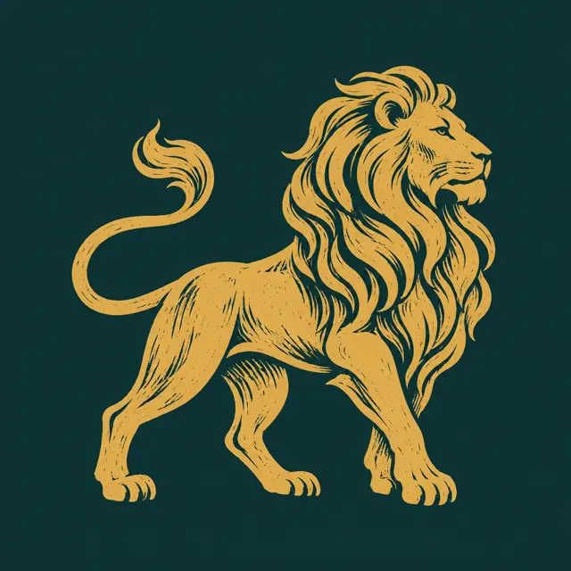
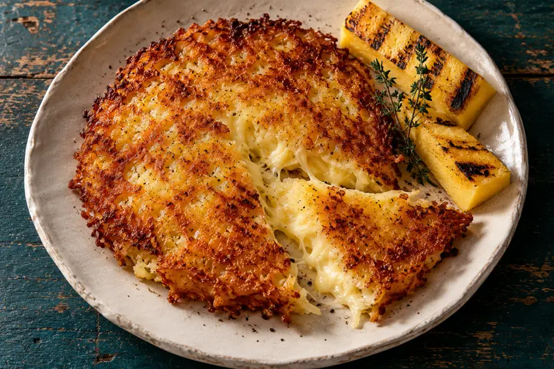
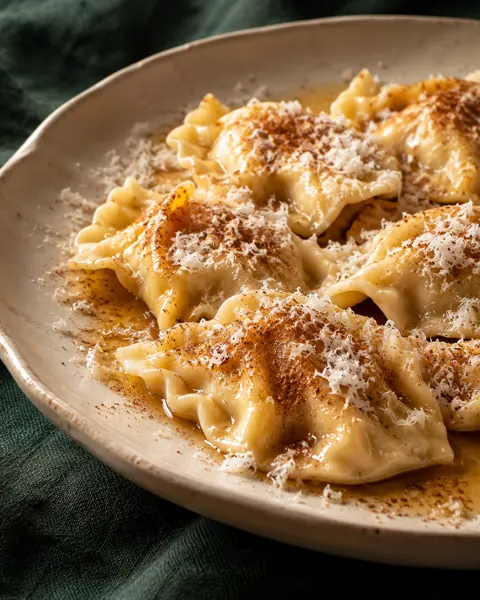
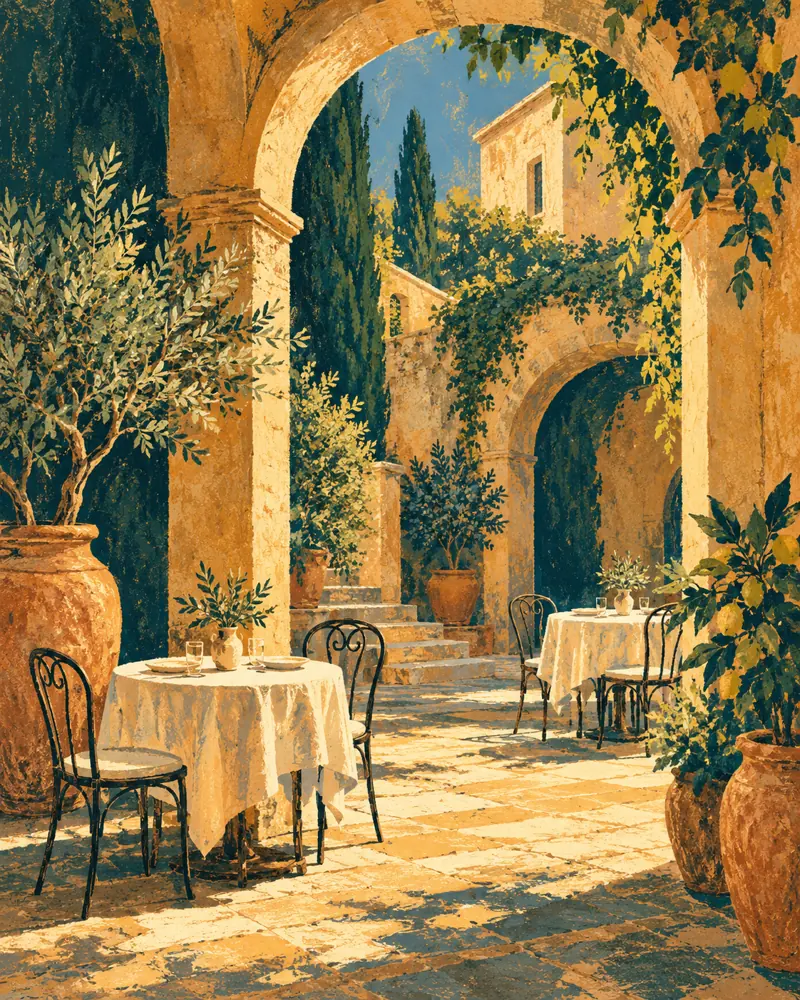

Cividale del Friuli · Borgo di Ponte
Cucina & convivialitàAnticoLeon d’Oro.

CIVIDALE DEL FRIULICucina friulana e piatti di stagione,
a pochi passi dal Ponte del Diavolo.
01 / A tavola
La nostra cucina.
Piatti della tradizione friulana,
pasta e specialità che seguono la stagione.

Frico & polenta
CjarsonsIl Friuli,
nel piatto.
Frico e polenta
Un classico della tavola friulana.
Cjarsons
La tradizione, tra dolce e salato.
Piatti di stagione
Pasta e proposte da scoprire al tavolo.
Esempi riportati nelle recensioni degli ospiti. Le proposte cambiano: chiedi al ristorante il menu del giorno.
Chiedi le proposte di oggi
02 / Il leone & il borgo
Un locale storico,
nel cuore di Cividale.
In Borgo di Ponte, vicino al Ponte del Diavolo, Antico Leon d’Oro è tra i locali storici riconosciuti dalla Regione Friuli Venezia Giulia.
Un ambiente accogliente e un cortile dove sedersi all’aperto nella bella stagione.
Locale storico del Friuli Venezia Giulia
03 / Il finale
Il gelato
della casa.
Il gelato artigianale è tra le specialità più ricordate dagli ospiti, anche nelle recensioni recenti.
Chiedi i gusti e le disponibilità del giorno.
Orari e disponibilità
Per gli orari aggiornati e le disponibilità,
contatta direttamente il ristorante.